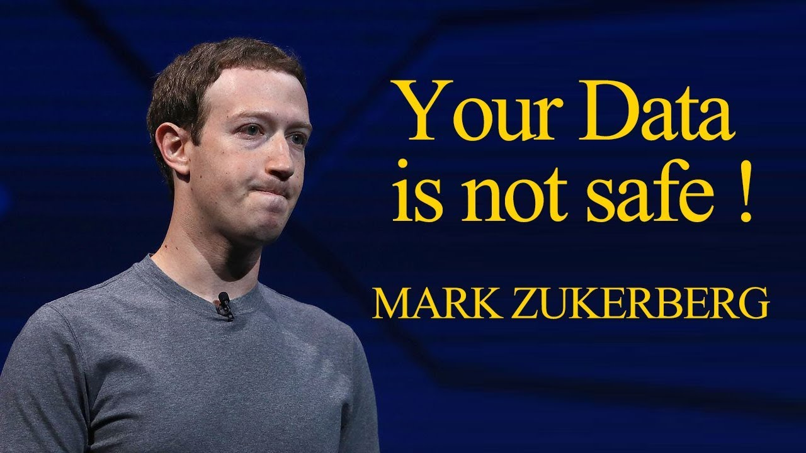

Facebook Data Privacy Scandal
Facebook experienced its biggest disaster over data privacy scandal in 2018.The CEO of facebook,Mark Zuckerberg , finally addressed the whole story but only after 'Delete Facebook' compaign became widespread around the globe.
POLITICAL CONNECTION
It was reported by The New York Times that a company called Cambridge Analytica that was working on Donald Trump's political campaigns had illegally accessed the personal data of over 50 million users.This data was believed to be used unfairly in targeting voters.
HOW THE DATA WAS ACQUIRED?
The Times reported that a researcher at University of Cambridge,Aleksander Kogen created an app called 'thisisyourdigitallife' and people who downloaded the app ,provided their personal data. Kogen passed that information to data mining firm,Cambridge Analytica.At that time , developers like Kogen could easily access the information about you and your friends with the help of Facebook API.
OTHER PRIVACY CONCERNS WITH FACEBOOK
Over the years,facebook has faced backlash regarding using and selling the data of users for advertisement purposes and also its employees getting high level access to misuse any user's data.Many cases of employees at Facebook stalking and accessing the personal data of women came into limelight . Surprisingly,these cases were never reported and employees return to their work with just a warning.This explains a lot about the ethics of the reputable apps like Facebook.
WHY YOU SHOULD CARE?
This is an issue of concern as not only facebook but so many other social media apps like Linked In , Adobe , Google,Instagram and eBay which knows you more than you know yourself are vulnerable to hackers easily . Carelessness of facebook to not properly investigate the user 's data tells us a lot about how these reputable companies work behind the curtains.In the end , People should always remember the idea of free product that when you are not paying for the service,you are the product.